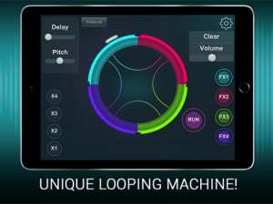
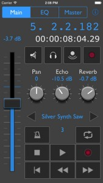

I’ll bet we all wish we had these bad boys in real life, but if you do, then editing just got a whole easier with this new app from Roland….
With AIRA Modular Customizer you can fully re-program the internal signal path of Roland AIRA Modular effects. Compatible with TORCIDO, BITRAZER, DEMORA and SCOOPER, the AIRA Modular Customizer lets you re-patch an array of virtual sub-modules for complete control of each effect’s signal path.
– Flexible and infinite signal path
You can fully customize the internal signal path of AIRA Modular effects with an array of virtual sub-modules. Saving and recalling patches is possible in realtime and you can even share patches with other AIRA Modular effect users.
– Variable virtual sub-modules
AIRA Modular effects include 15 virtual sub-modules with more available through future expansion.
They include:
LFO, ADSR, NOISE, SAMPLE & HOLD, RING MOD, FILTER 6 dB, FILTER 12 dB, TONE, AMP, MIXER, STEREO MIXER, CURVE CONV, GATE DIVIDER, TRIG TO CV DELAY TIME, MIDI CLOCK TO GATE
– Re-patch via audio signal
Connect the headphone jack of your tablet to the REMOTE IN jack on any AIRA modular effect module and you can customize the signal path in realtime. Make sure to set the volume level of your mobile device to maximum.
Please note the maximized volume level of your mobile gear.
*Compatible models: TORCIDO, BITRAZER, DEMORA, SCOOPER
*Make sure your model is updated with the most current system program. The latest system program and setup instruction can be found at the support pages at www.roland.com.
Another day, and another new music/audio/DJ app from the team at Music Paradise. LLC. Most of their apps are on the social/fun side, but this one might also be useful for experimenting with some serious sampling.
Get ready for the total musical madness! Check out this insane sampler called “Mad Looper Plus”! We’re taking the art of music to the new level! Mad Looper is not a simple, ordinary sampler with a couple of pre-sets and samples, it’s a unique looping machine you’ve never encountered before! Make wild and agressive beats basing on probability and randomeness! This is a brand new way of music making!
HOW TO USE: Open the samples’ library, find the desired ones and attach them to the particular parts of the circle. Add some effects fo make the music much more different! Set the probbility and randomeness by joining the parts of the circle with lines.
Mad Looper Plus features:
High-quality audio and effects
Stunning visual effects and animation
Brand new system of music making
Uniqe sampler and drum machine
Huge number of samples
Mad Looper Plus widens your musical scope and let you have a new, insane look at what is called music!
I know is not strictly a noise making app, but it is one of the most original apps I’ve seen this year, and is sure to be a handy tool to any budding synth app users. As the name eludes, it teaches users how to go about crafting synth sounds, by breaking down how sounds are constructed and tests users on how certain sounds have been created. It’s a refreshing approach to teaching and on top of that, you get to try a bunch of ‘lessons’ for free!
Syntorial is video game-like training software, that will teach you how to program synth patches by ear. By combining video demonstrations with interactive challenges, you’ll get hands on experience programming patches on a built-in soft synth, and learn everything you need to know to start making your own sounds with ease.
HIGHLIGHTS
– Interactive Learning: Syntorial doesn’t just show you how synth programming works. It engages you in Interactive Challenges in which you program patches on a built-in synth. You aren’t just learning how to design sound, you are becoming a sound designer.
– For Musicians, Not Physicists: Instead of talking about the science and physics behind synthesizers, Syntorial will show you how each control effects sound, as well as when, why and how you would use them when designing sounds. This is information that you can immediately apply to real-life situations.
– It’s All About The Ear: One step at a time, Syntorial trains your ear to recognize how each control shapes and manipulates sound. By the end of the program you’ll be able to take the sounds you hear and re-create them, completely by ear.
LESSON SPECS
– Challenges: Learn by doing! Complete challenges by programming patches with Syntorial’s built-in synth.
– Videos: Everything is taught through video demonstrations using the same synth that you’ll use in the challenges.
– Patches: Program, program, program. After all, that’s what it’s all about, right? By the end you will have programmed tons of patches, from simple to complex, familiar to strange.
– Quizzes: Multiple choice questions to help you retain and remember everything you learn.
– On Your Own: Syntorial will give you periodic tasks to be carried out on your own with whatever synth(s) you use.
SYNTH SPECS
– Subtractive synthesis
– Three Oscillators (Two with Waveform, Pitch, Pulse Width, and Mix controls, and a Sub oscillator with Waveform and Volume controls)
– Saw, Pulse, Triangle and Sine waveforms
– FM knob
– Noise Oscillator
– Oscillator Sync
– Filter (Low, Band and High Pass) with Resonance and Key Tracking
– ADSR Filter Envelope
– ADSR Amp Envelope
– AD Modulation Envelope
– LFO with four waveforms, seven destinations, rate, amount, trigger, and mono/poly modes
– Mono and Poly Voice Modes
– Portamento
– Unison with Voice, Detune and Spread controls
– Ring Modulation
– Distortion, Chorus, Phaser, Delay, and Reverb effects
– Mod Wheel, Pitch Wheel and Velocity controls
– Audiobus, Inter App Audio, and Virtual Midi enabled.
FREE VS UPGRADE
The free app comes with the first 22 lessons, as well as Syntorial’s fully featured synth (see above). Upgrade to get:
– All 199 Lessons, including 129 Challenges, 147 Videos, and 706 Patches covering the most common synthesis parameters.
– Additional Lesson Packs covering Cakewalk Z3TA+ 2 and Minimoog Voyager, each containing 30+ videos. More Lesson Packs planned for the future.
– Pay once and get access to all of the above on iPad, Mac and PC. Sync your progress across all 3 platforms. Train where you want, when you want, and how you want.
– Plugin version of Syntorial’s synth, Primer. Program, record and play Primer in your favorite desktop recording software. VST (Mac/PC) and AU (Mac).
Use your iPhone or iPod touch to remote control GarageBand on your Mac! Special introductory pricing of $2.99 until July 5!
** gbXRemote works only with the current Apple GarageBand for Mac (the version that has been available since October, 2013). It does not work with earlier versions of GarageBand. YOU MUST HAVE A MAC COMPUTER. **
With gbXRemote, control record and playback from anywhere in your studio within WiFi range. Select a track, adjust its volume fader, toggle mute and solo, and more. The currently selected track name is shown. Untether yourself from the computer mouse and screen!
Standard transport controls are available on one screen. Real time bar beat and time displays let you know where you are in your song. Adjust pan and 2 sends (echo, reverb). EQ controls let you expand your creative options.
gbXRemote has 2 theme styles that you can change anytime in the iPhone Settings app. Choose black or silver.
gbXRemote uses OSC (Open Sound Control) control surface support to communicate with GarageBand. THERE IS NO NEED FOR ANY SPECIAL APPS, FILES OR AGENT PROGRAMS TO USE GBXREMOTE WITH GARAGEBAND. All you need is a working Wi-Fi connection between the Mac running GarageBand and your iPhone or iPod touch.
REQUIREMENTS
* iPhone or iPod touch running iOS 8.3 or higher
* Apple GarageBand (version 10.0.3 or higher) music application installed on your Mac computer
* Working Wi-Fi connection between the Mac where GarageBand is installed and your iPhone/iPod touch
* iPhone/iPod touch Bluetooth must be set to OFF to insure reliable communications with GarageBand
gbXRemote FEATURES
* Control transport functions (Rewind, Fast-Forward, Beginning, Play, Stop, Record, Cycle)
* Choose between two looks/themes
* Real time bar-beat display
* Real time time-based display
* Enable/disable mute, solo, input monitoring and record enabling for each track
* Adjust overall master volume
* Adjust current track volume
* Current track’s name is displayed
* Select current track
* Enable/disable Metronome
* Adjust pan level
* Adjust echo and reverb sends
* Control EQ parameters, enable & disable each band
iThereal for iOS is a multi-function Inter-App Audio App, virtual Theremin and MIDI controller, and an expanded Theremin instrument that allows for more modern Theremin gestures.
In many senses it is a classic Theremin but it has the freedom to incorporate newer techniques for playing and interfacing that were unavailable in its predecessor.
With iThereal iOS, the original Theremin’s interface of proximity to the instrument’s antennae has been replaced with a sophisticated use of touch gesturing and the ability to use an iOS device’s internal Gyroscope to influence pitch and volume.
Using iThereal as a MIDI controller allows the performer to incorporate gesturing and Gyroscope functions to control almost any voice available through Inter-App Audio Hosts (such as GarageBand). Connect your iOS device through Wi-Fi or MIDI cable to send raw MIDI data using iThereal to a device that reads MIDI.
Features:
-Turn on ‘Vibrato’ in real time to color your sound without disturbing your musical decisions, choosing both depth and rate of modulation.
-A new feature we call ‘Discrete Portamento’ gives the effect of a real-time sequencer whose sequence is modified by the choice of your notes.
-Using GarageBand your instrument can be modified to include effects such as Reverb, Echo, etc.
-A thoroughly customizable User Interface.
iThereal iOS frees the musician to explore a sonic tapestry of unlimited possibilities.
apeDelay – Implements up to 2048 Stereo Spectral Delay lines with Feedback. The algorithm is based on the STFT (i.e. Short Time Fourier Transform) analysis/re-synthesis. The audio signal is converted in abstract ‘Frequency Domain’, where is manipulated and transformed back again in ‘Time Domain’. You can draw three shapes for the Times, Feedbacks and Panning. This is achieved from the multi sliders, who provide a great tool to manage the huge numbers of parameters. You can also benefit of more advanced spectral manipulations like the Spectral Blur, Granulate, Bins Decimator and Freeze.
– Audiobus and Inter-App Audio support (sender and FX)
– Built In Stereo Sampler with varispeed and scrubbing
– Control Manager LFO for all the Parameters
– Midibus, Virtual Midi and Network: 14 bit NRPN controllers
– File Manager, sharing common audio files via iTunes, Dropbox and AudioCopy
– Snapshots Presets Morphing Pad
– Post Fx: Stereo Delay, Amazing ClassicVerb Low/Hi Shelving and Dynamic Processor
– etc…
iJingle WebCaster is the latest and greatest addition to the iJingle product family.
For this new App we’ve taken iJingle PRO as the basis and added extensive PLAYLIST and SHOW PLANNING capabilities, creating iJingle WebCaster, to be used by Broadcasters, Podcasters and Live Sound Engineers.
If you’re On-air or engineer Live sound…
iJingle WebCaster is a soundboard style jingle player, great for any type of on-air or live situation. The extensive arranger and playlist creation features allow you to prepare parts of your show in advance or even create them on the fly. Select them from the preset bar and press play, pause or skip ahead.
If you’re preparing a Show or Podcast…
iJingle WebCaster’s Show Planning allows you to pre-plan your Show or Podcast in great detail. Use the arranger to set the total time for your show, add music items (jingle, fx and/or intro music) and non-music items (presentation, interview, etc.). When you’re ready to record your show, just push play and off you go. The time line informs you about what’s playing, what’s coming and even shows you documents and websites you’ve linked to show items, right on the main screen.
If you’re pre-recording a radio show or podcast…
iJingle WebCaster has voice-tracking. This means that you can create a complete show, right on your iPad. Plan your show by adding audio elements to the arranger and then record your voice on the segments you need. Easily edit your voice bits and tweak the arrangement and save the whole show as one file, ready to be distributed.
Explore unreal synthesis with the most unique performance control on iOS! TC-Performer presents a multi-touch performance environment unlike any other synthesizer. Simply touch the screen; there are no buttons, keys, or sliders to hit. The sounds are generated entirely by your touch movements.
Each patch has a unique method of control. Pull, tap, drag, twist, and stretch your touches on the screen. There is no wrong way to play! Every instrument is a new landscape of sound creation. Pads, leads, effects, and indescribable oddities await.
You can download more patches in packs inside the app. There is also a transposition section available to change the key of the patch to fit your song, and Audiobus compatibility to record via inter-app audio.
Start exploring touch synthesis with TC-Performer!
SidTracker64 is the ultimate chiptune production package tool for the iPad. It emulates the SID sound chip from the dominating home computer of the 80s – The Commodore 64.
Get started immediately with the bundled songs and sounds in various styles, from old skool bleeps n blips to new school with multi speed and advanced table editing. Explore, remix and make new songs based on the old classic c64 game tracks “Commando” by Rob Hubbard or “Blood Money” by Fredrik Segerfalk, and the brand new youtube remix hit of the “True Survivor” Kung Fury soundtrack, all included in the app.
SidTracker64 is a retro-style music creation tool and synthesizer combined with modern features such as midi keyboard and controller input, Audiobus 2 and Inter App Audio for recording in your favourite DAW-app. Midi clock in lets you sync to other apps and hardware drum machines and synthesizers, such as the Elektron Analog Four.
SidTracker 64 can be used for live looping, making complete songs, and the minimum latency makes it suitable for live use. Export your music to Dropbox and e-mail as audio or .sid and even .prg files which you can run on a real Commodore 64.
Editing is based on hands on touch interaction or midi input instead of the hardcore style of direct data editing. Record live to a metronome or input notes step-style. Real SID-composing has never been simpler and more fun!
SID synthesizer engine specs:
· Fully emulated SID 8580 R5 chip.
· 3 separate voices
· 8 waveforms – tri, saw, pulse with pwm, noise, trisaw, tripulse, sawpulse, nowave
· Wavetable editing
· 3 volume envelopes
· Dedicated vibrato controls
· 1 multimode filter LP/BP/HP (12/6/12db) with sweep envelope
· Filter table editing. Change filter cutoff and modes up to 1/240
· Hard sync and Ringmod per voice
· PWM sweep envelop
· PWM table editing
· Hard restart
· Variable emulation speed from 25-240hz (standard 50)
· 32 instruments per song (copy/paste/rename)
Tracker (sequencer):
· 3 voice patterns
· Mute voices on/off
· Change instrument per step
· FX pattern – change volume/filter/speed per step
· Loop pattern
· Song building
· Live or step recording
· Metronome / count in
· Follow mode
· Note effects (Glide/sustain/vibrato/filter & pulse reset/tie)
· Song mode with transpose
Midi:
· Keyboard input 1-3 voices (mono, duo and polyphonic)
· CC-assignable synth parameteras
· Modulation wheel vibrato
· Pitch bend
· Midi Clock in
· Selectable input channel
Export:
· .s64 – native SidTracker 64 file
· .m4a – audio
· .sid – for use in sidplayer
· .prg – exports play data for a real Commodore 64
This looks pretty cool in theory. I haven’t had a chance to try it in person, but if you have, post a message on your thoughts below.
KLANG:kern is the ultimate 3D surround mixer. It enables you to create your own individual 3D headphone mix the way you like it. Put instruments exactly where you want to hear them. When using the i3D mode, just stand up and move around with your iPad to experience a new world of sound.
We provide stems for two songs to get you started. You can import further songs directly from your iTunes Music Library or upload them using the iTunes File Sharing functionality. Just import the stems from your favorite song to remix, play along, or just have fun with the amazing sound experience. KLANG:kern supports mp3, m4a and wav audio formats.
When uploading files using the iTunes File Sharing please make sure that you stems follow the following naming schema: [SongName] – [Track#] – [StemTitle (optional)].[mp3/m4a/wav]
To get a free impression of what is possible with KLANG:kern try our KLANG:app. Is has the same 3D audio engine but does not allow you to upload your own stems.
Please use headphones.
The next version will also allow you to export your mix as well as the settings.
For further infos or any questions visit us at www.klang.com!
Thanks for dropping by ProMusicApps. Whether you're a dedicated app developer, or devoted app users like us, we hope you find what you're after. Ping us via the Contact Page if you want to touch base.
With AIRA Modular Customizer you can fully re-program the internal signal path of Roland AIRA Modular effects. Compatible with TORCIDO, BITRAZER, DEMORA and SCOOPER, the AIRA Modular Customizer lets you re-patch an array of virtual sub-modules for complete control of each effect’s signal path.


{kind=link}
{kind=link}
{kind=link}
{kind=link}
{kind=link}
{kind=link}
{kind=link}